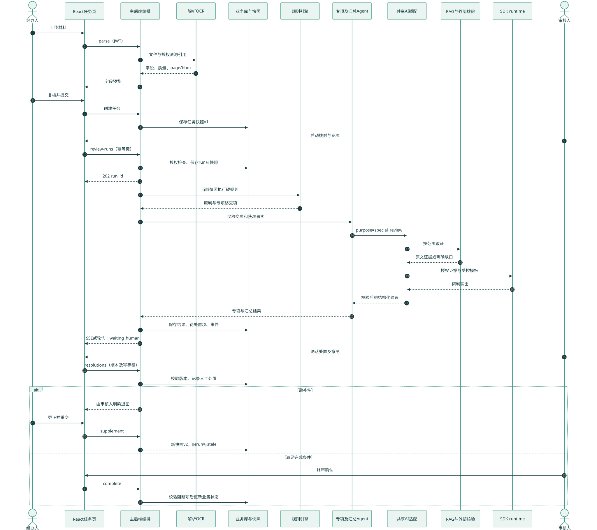
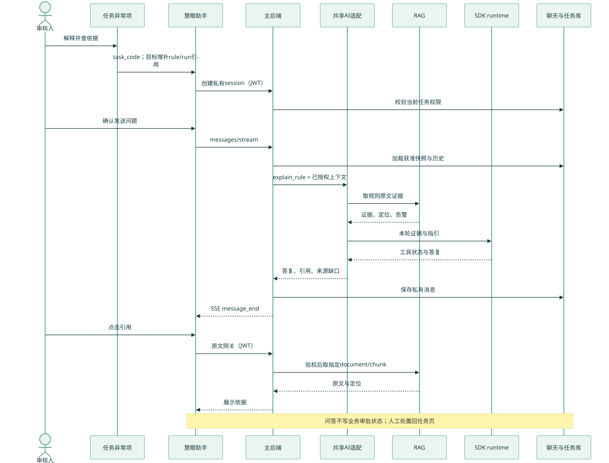

1. 目标模块架构：两条入口，共用能力
网站和任务状态由主后端管理；专项 Agent 和助手复用受控 AI 适配、RAG 与模型服务。Mermaid 源文件

研究草案 v0.1 · 2026-10-22。先看目标架构，再看两条时序。接线总览 · 接口细则 · 分工与验收 · 页面原型
目标图表示待实施设计，并非上线证明。基线图记录研究开始时源码；研究期间新增的助手协作与 RAG 检索实现见接线总览的增量说明。下图不代表同学已经确认排期。
网站和任务状态由主后端管理；专项 Agent 和助手复用受控 AI 适配、RAG 与模型服务。Mermaid 源文件

上传、字段确认、规则、专项、人工处置和终审形成业务闭环。Mermaid 源文件

解释、取证和引用走助手链路，审核决定仍需回任务页明确操作。Mermaid 源文件

任务、业务审核运行与聊天分别保存自己的状态；运行成功不能自动批准贷款。Mermaid 源文件

用于定位 Mock、演示 UI 与真实服务之间的缺口；并行开发增量以文字核查记录为准。Mermaid 源文件
